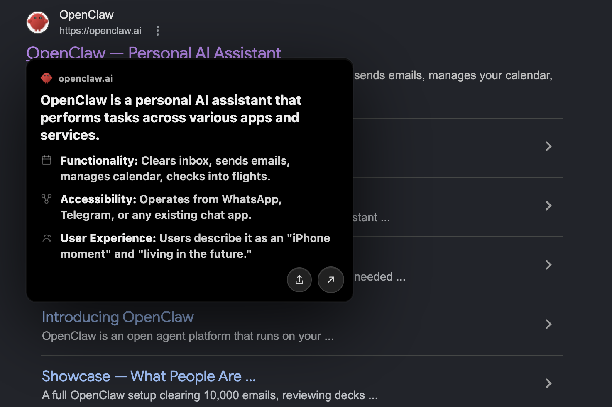
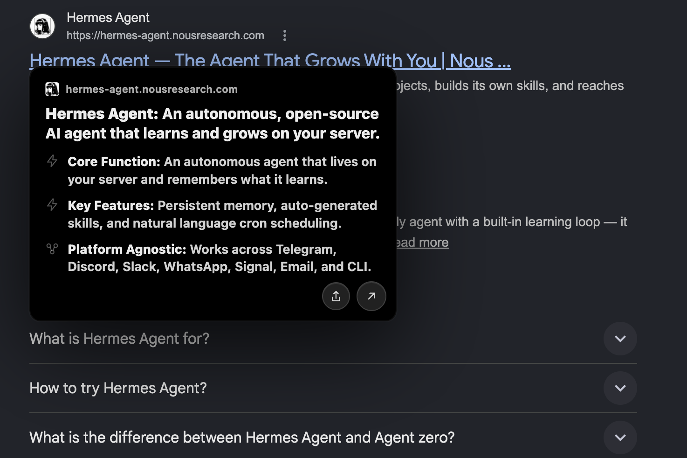
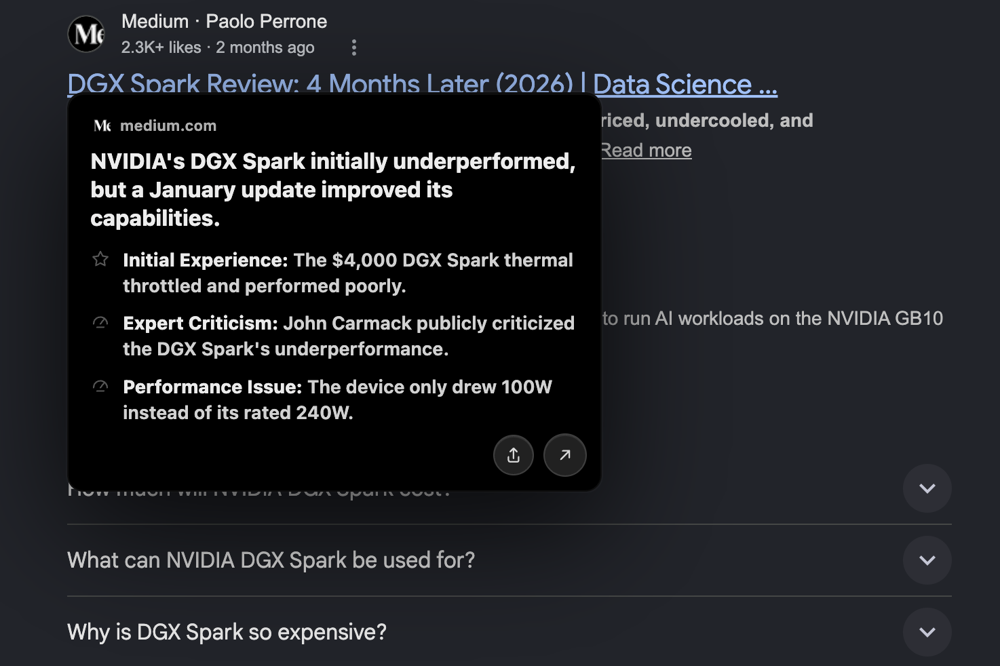
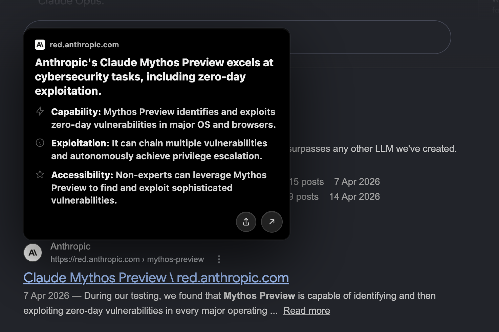
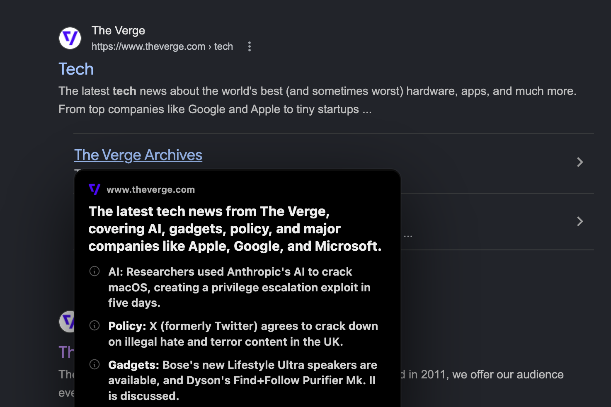

P / 01Latency
~350ms or it didn't happen.
A hover that returns slower than a click isn't a preview, it's a delay. The worker streams, the extension paints incrementally, and the median round trip stays under 350ms.
Search is full of dead ends — pages that promise an answer and deliver an ad. Arcks intercepts the hover, fetches the target through a Cloudflare Worker, and renders a three-bullet summary in the time it takes you to decide. The web stays open. The friction goes away.
A hover that returns slower than a click isn't a preview, it's a delay. The worker streams, the extension paints incrementally, and the median round trip stays under 350ms.
A 30-minute KV cache on the worker and a 10-minute in-memory cache in the extension. Identical hovers cost zero. Nothing about your browsing is persisted past these windows.
Arcks does not require sign-in, does not retain your queries, and does not log URL→summary pairs. The worker fetches anonymously and forgets.
Default is Gemini 2.5 Flash. Swap to any OpenRouter model in the options. The summary prompt is portable; the cost stays yours.
Every card returns a headline plus three structured bullets. Not a paragraph, not a teaser. The card is the answer, not the bait.
MIT-licensed extension and worker. Fork the repo, point it at your own Cloudflare account, change the model. The defaults are good. The defaults are also optional.
A content script watches Google's result list and debounces every hover. When the timer fires, Arcks captures the destination URL and dispatches a single message to the background service worker. Nothing leaves the browser yet.
The worker pulls the target page server-side, dodging CORS and client-side scraping. The body is stripped to readable text and sent to gemini-2.5-flash with a structured-output schema. KV checks happen before the model is even pinged.
The response — headline, three bullets, source host — is rendered inline as a positioned card. The extension also stamps a share button, a latency badge, and a fallback for paywalled or empty pages. The next identical hover costs zero.





gemini-2.5-flash
003 / 010
openrouter.ai route
004 / 010
Stop opening tabs you were never going to read.